SO-101 follower: camera metrology results (Phase 2)
2026-10-26 → 2026-10-31. One Sony A7 IV (35 mm, f/11) at ~0.6–0.7 m; an iPad showing a pixel-exact ChArUco board as the fixed reference; a 20 mm AprilTag (36h11 ID 2) on the gripper. Every arm measurement is the tag's pose relative to the iPad seen in the same photo, so camera motion cancels.
Headline
Out of the box, the SO-101 follower puts its gripper ~8 mm from where it's told, mostly sagging low under gravity. Calibrated against a camera, it reaches ~2 mm RMS (≤ 3 mm worst case) and repeats to under 1 mm. Repeatability is set by the servos' deadband, not by gear backlash. Drift while holding a pose is a tick-sized re-settle that the servo's own encoder reports, not thermal creep.
| Value | Step | |
|---|---|---|
| Accuracy, nominal model (commanded) | 8.2 mm 3D RMS; lands ~7.5 mm low | 10b |
| Accuracy, calibrated + one encoder correction (commanded) | 1.9 mm 3D RMS, 1.5 mm lateral, max 3.0 mm | 10b |
| Knowing where it is (calibrated model from encoder readings) | 0.8 mm lateral, 1.1 mm 3D RMS | 10 (independent test) |
| Repeatability (same target, same approach) | 0.7–0.9 mm (ISO 9283 RP) | 8 |
| Direction-dependent offset | 5–12 ticks per joint = servo deadband; hidden gear backlash ≲ 1 tick | 8 |
| Drift while holding (45 min, elbow 29 → 41 °C) | one 1-tick step (−0.43 mm), otherwise ≤ 50 µm (~1 µm/min); reversible | 11 |
| Measurement floor (tag relative to iPad, per shot) | 5–15 µm lateral, ~100 µm depth | 5b |
Conditions:
-
Where: measured at the gripper tag, not the tool tip (D13), in the inner workspace (~0.2–0.45 m reach, ≤ ~270 mm high, shoulder-lift gravity torque ≤ ~0.75 N·m). At far-forward reach the errors grow to 2.5–5 mm.
-
Arm state: warmed up, 3 s settle, quasi-static.
-
Scale: absolute scale nominal (≤ 0.3 %, D4).
1. Measurement system
| Item | Result | Step |
|---|---|---|
| Tethered capture (gphoto2) | 50/50, 5.9 s per 67.6 MB RAW | 1 |
| Intrinsics | 41 iPad views, RMS 0.166 px; fx 7007.4, fy 7006.2 px; bottom 21 % of the frame uncalibrated | 4 |
| Rig stability (iPad only, 1 h) | ≤ ~40 µm/h | 5 |
| Tag corner refinement | edge-line fit on linear (gamma 1) RAW; bias ≤ 0.03 px, scatter ~0.02 px (synthetic). OpenCV SUBPIX biased ~0.17 px inward; gamma shrinks the tag 0.2–0.6 px per edge | 5b |
Floor, hands off the table (20261030-113927) |
tag rel. iPad per shot: 15.6 / 5.5 / 107 µm (x / y / depth); drift ≤ ~23 µm/h | 5b(a) |
| Blur | soft focus (edge 0.23 px) ≈ 2× corner noise of sharp (0.055 vs 0.028 px); usable for relative work | 6 |
| Hand-eye model (camera ← base, tag ← gripper) | 2.2 mm RMS at the tag; predicted every lost-tag pose from joint angles alone | 6 |
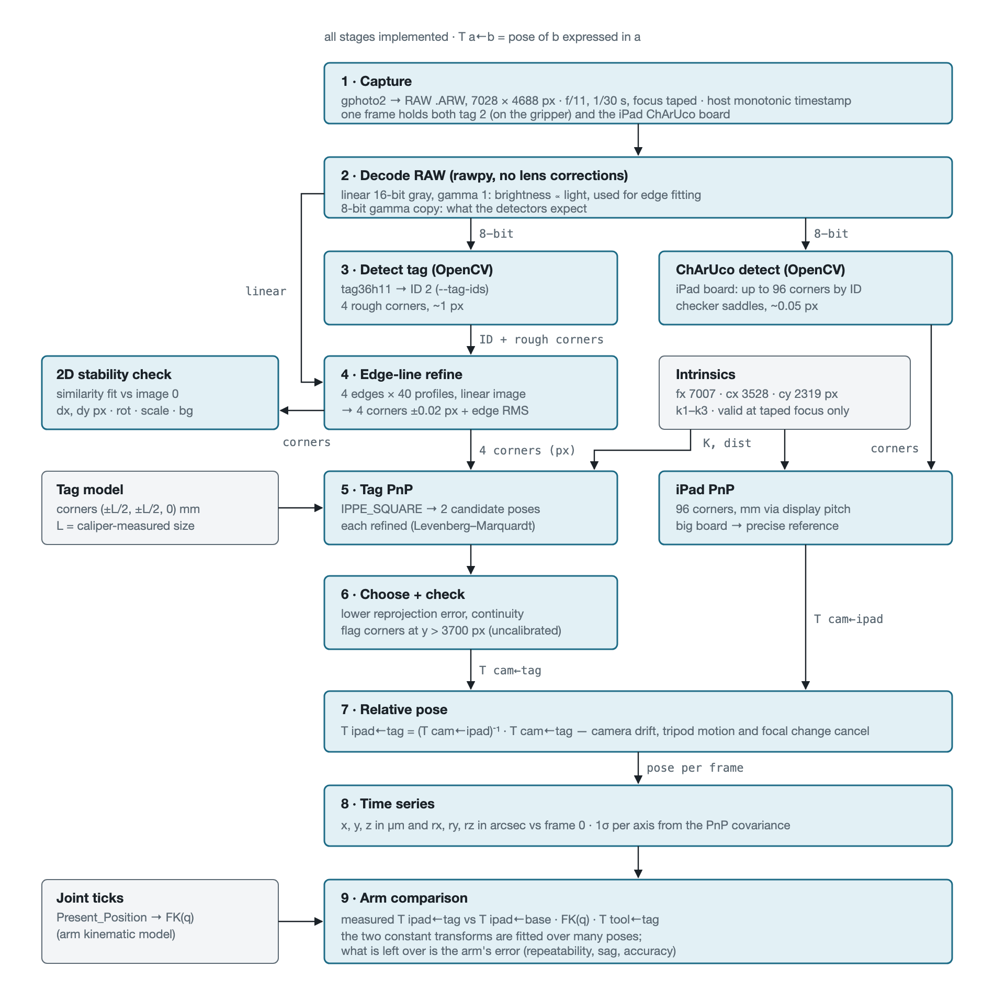
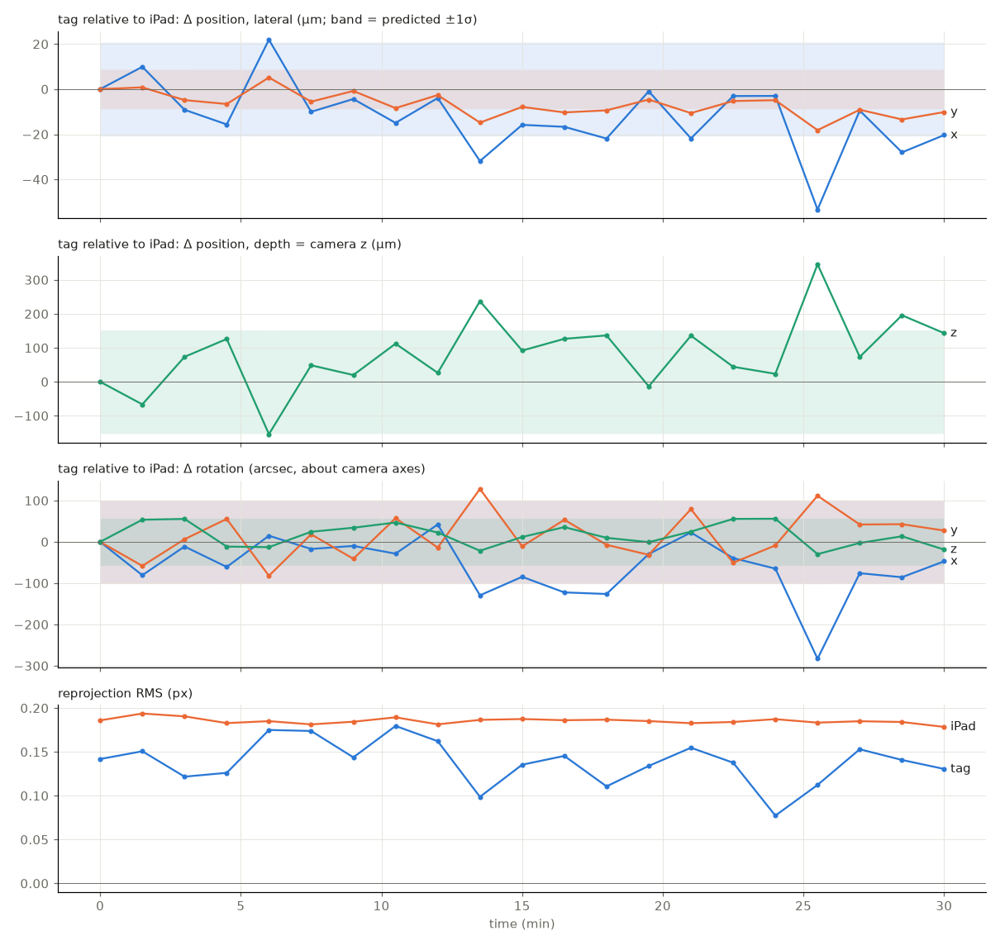
Lessons:
-
Touching the table moved the camera 0.13 mm.
-
Sign bug: the background-motion tracker's sign was inverted (LESSONS #5).
-
The workspace was set by the camera's depth of field and field of view, not by the arm.
2. Workspace and the dry run (step 6)
- Workspace definition: extremes taught by hand (17 poses) → a spherical sector → an even grid, each pose checked for table clearance, the iPad-side pan limit and predicted tag visibility.
- Dry run: 29/29 captures, manifest matching the files 1:1, no stillness flags, tag found at 28/29.
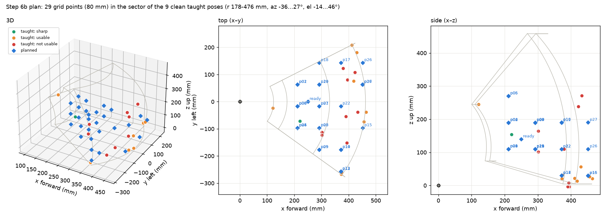
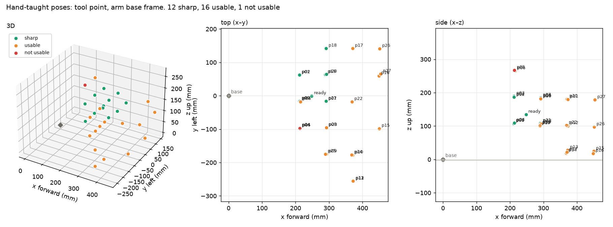
Animation: ../figures/capture_tour.gif.

3. Repeatability and backlash (step 8, 20261030-170704)
| Target | sd x / y / z (µm) | RP 3D | RP lateral |
|---|---|---|---|
| p01 | 123 / 344 / 106 | 836 µm | 838 µm |
| p04 | 45 / 271 / 140 | 776 µm | 701 µm |
| p22 | 281 / 137 / 187 | 861 µm | 731 µm |
| Joint | Camera-derived offset (± approach) | Encoder offset |
|---|---|---|
| shoulder_pan | 7.0 ticks | 8.0 |
| shoulder_lift | 7.0 | 7.5 |
| elbow_flex | 11.9 | 12.5 |
| wrist_flex | 5.2 | 5.0 |
- Spread: the servos land 0–2 ticks differently per return, and those tick differences predict the spread (r 0.72–0.87).
-
Backlash: the direction offsets are the servo deadband, which the encoder sees. Hidden gear backlash is ≲ 1 tick.
-
Settle time: a 3 s settle leaves ~18 µm of further sink.
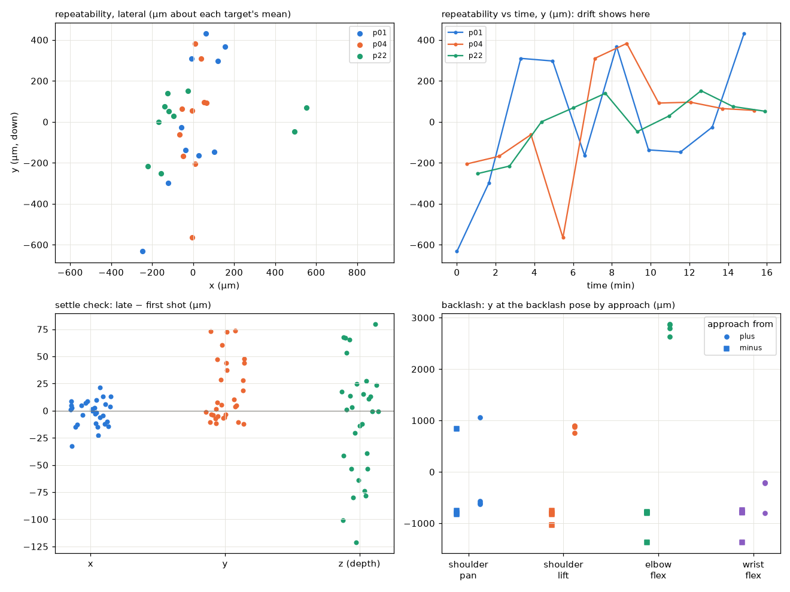
4. Kinematic calibration (step 10)
- Data: 221 shots / 92 poses from 4 runs (fit), plus an independent test of 17 never-fitted poses.
-
Model variants: six, each in
config/kinematics/follower_<variant>.json. -
Full details:
docs/results/step10_kinematic_calibration.md.
| Variant | Adds | CV lateral | CV 3D | Test lateral | Test 3D | Test sub-mm lat |
|---|---|---|---|---|---|---|
| nominal | camera/tag transforms only | 1.57 | 1.98 | 2.02 | 2.18 | 4/17 |
| offsets | + lift/elbow zero offsets | 1.43 | 2.06 | 1.81 | 2.80 | 3/17 |
| links | + link geometry corrections | 0.89 | 1.66 | 1.01 | 1.34 | 10/17 |
| full | links + wrist offsets + tag scale | 0.89 | 1.67 | 1.02 | 1.35 | 10/17 |
| stiff_lin | links + linear gravity compliance | 0.74 | 1.07 | 0.79 | 1.14 | 13/17 |
| stiff_thr | links + shoulder compliance above 0.75 N·m | 0.91 | 1.79 | 0.92 | 1.28 | 12/17 |
mm at the tag, relative to the iPad; CV = held out, 5-fold by pose.
- Link geometry and gravity compliance matter. Zero offsets alone don't help.
-
The gravity term helps across the workspace, not only at the far edge.
-
The residual is mostly depth along the camera's line of sight.
-
Sub-mm poses (CV 3D): nominal 6/92 →
stiff_lin59/92 (median 0.77 mm).
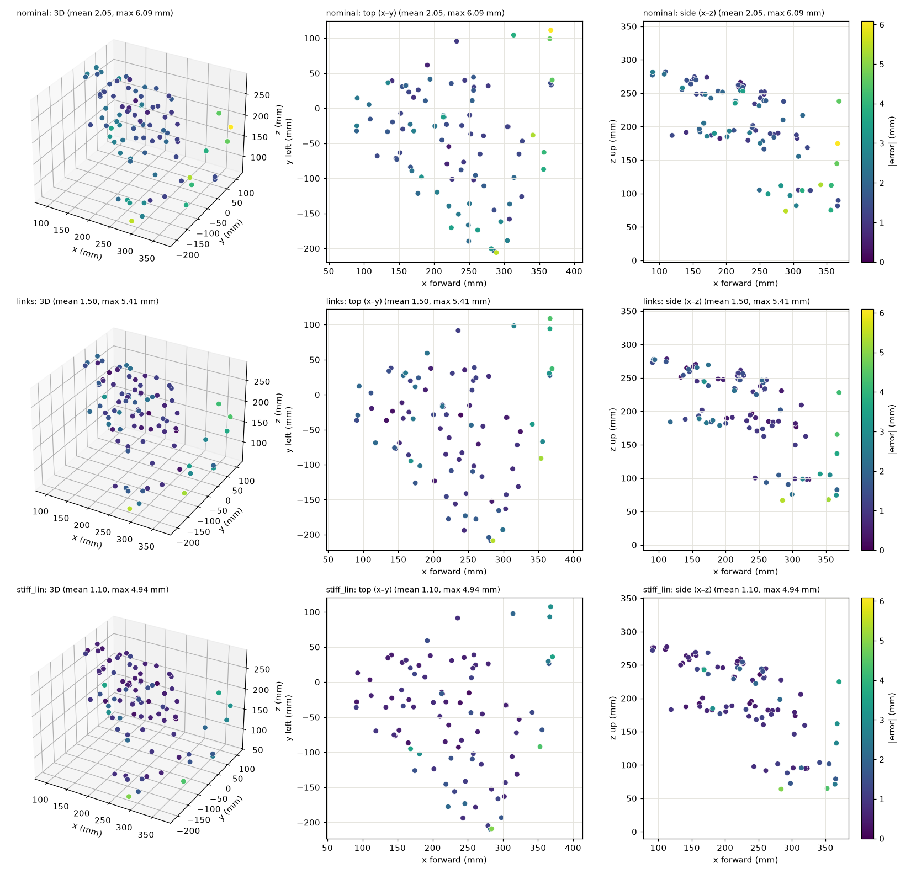
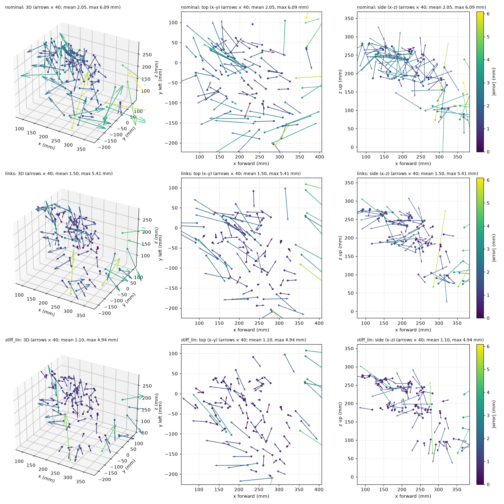
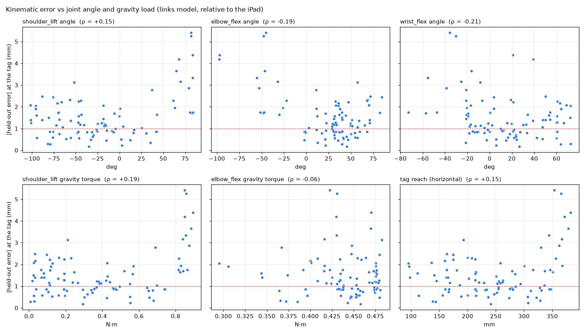
Interactive versions: ../figures/step10_error_dots.html, ../figures/step10_error_map.html.
5. Commanding with the calibrated model (step 10b, 20261031-135444)
Re-anchored on the grid poses (20261031-103300) after the iPad moved; 13 targets × 3 methods.
| Method | 3D RMS | Lateral RMS | Max | Common offset (x / y / z) | Lateral scatter |
|---|---|---|---|---|---|
| nominal IK | 8.18 | 8.07 | 10.95 | +0.8 / +7.5 / −0.8 | 2.91 |
calibrated (stiff_lin) + bend/droop feedforward |
2.10 | 1.84 | 4.42 | −0.7 / −0.5 / −0.3 | 1.65 |
| + one encoder-reading correction | 1.88 | 1.53 | 2.99 | −0.3 / +1.3 / −0.7 | 0.75 |
- Calibrated commanding is better than nominal on all 13 targets. The encoder correction, which uses only the servo's own reading, halves the landing scatter.
- Re-anchoring lesson: a first attempt anchored on poses where the model fits poorly carried ~2.6 mm of anchor offset. Anchor where the model is good.
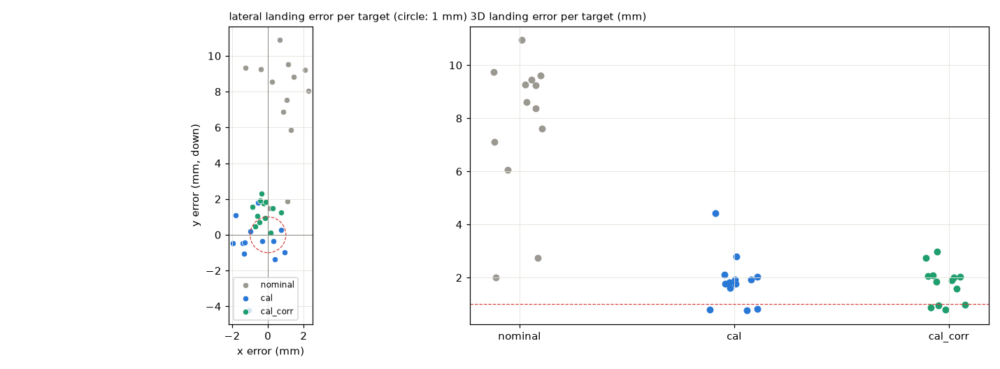
Animations: ../figures/kinematic_grid_rerun_20261031-103300.gif, ../figures/validation_10b_20261031-135444.gif.


6. Drift the encoders can and can't see (steps 5b(b), 11)
| Run | Observation |
|---|---|
5b(b), 30-min hold at ready (20261030-125013) |
+258 µm sink with no encoder change; elbow 30 → 39 °C |
Step 11, 45-min hold from cold (20261031-152653) |
one −430 µm step at 3.2 min = one elbow encoder tick (2270 → 2269); otherwise ≤ 50 µm (~1.3 µm/min) while the elbow rose 29 → 41 °C |
| Step 11 cool-down, 30 min unpowered | lateral within 50–100 µm; no trend with temperature |
Step 11 return to ready |
back at the hold start (0 % of the drift left), same elbow tick |
- What step 11 shows: at a fixed pose, the drift is tick-sized, reversible and visible to the encoder. Continuous thermal drift is ~1 µm/min.
- Open: the 5b(b) sag with no tick change did not reproduce.
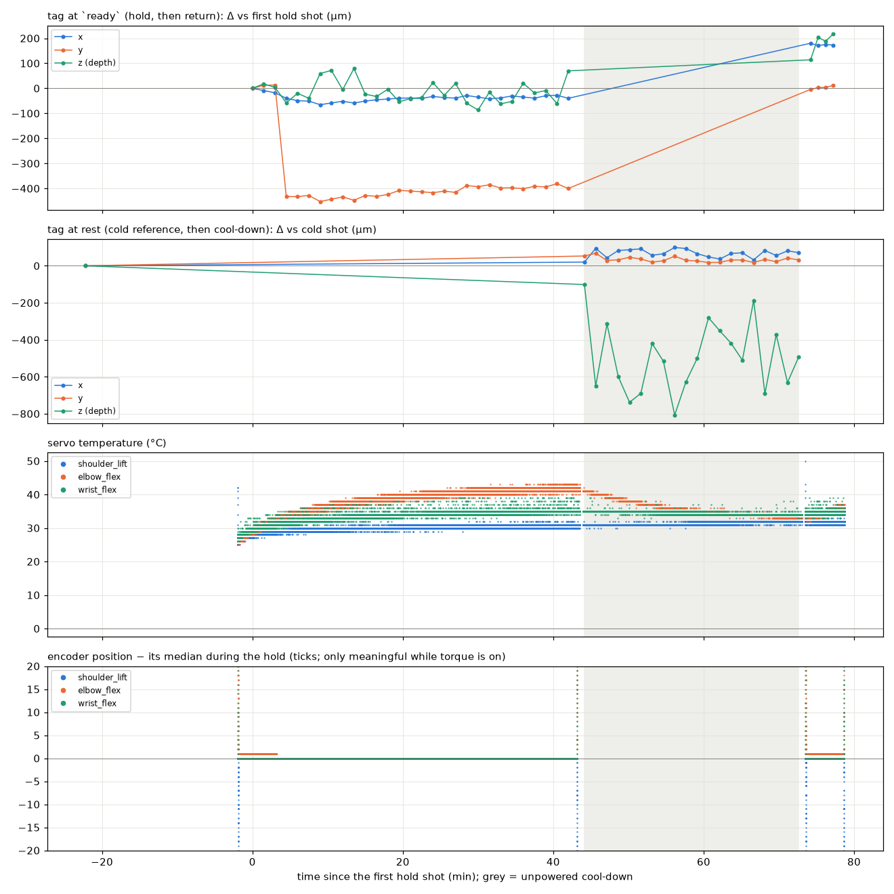
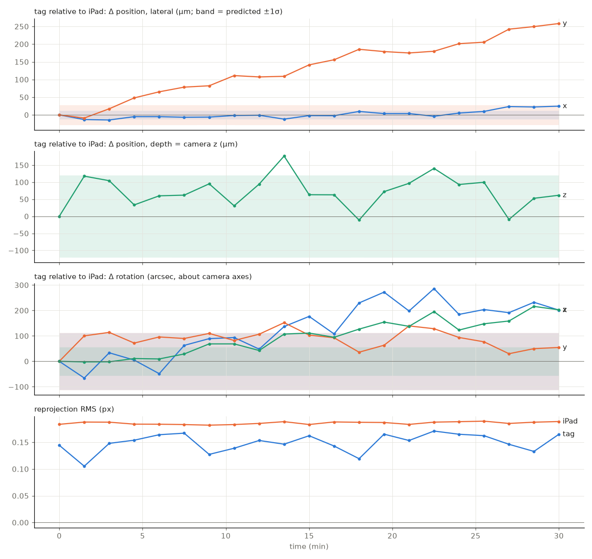
7. Limitations
- Static only: 1/30 s exposure, ~6 s per capture, unmeasured trigger lag. No dynamics (ring-down deferred, D11).
-
Tag, not tool tip: the tool tip needs pivot calibration (D13).
-
Single 20 mm tag: depth is the weak axis (~100 µm per shot) and dominates the residuals.
-
Workspace: the top is cut off by the field of view; depth of field limits reach toward the camera.
-
Contact detection isn't gravity-aware: a false trip at full reach (p39).
-
Nominal scale (D4): results reprocess without recapture once measured.
-
Wrist compliance not separated: the fitted wrist compliance (13°/N·m) can't be told apart from a wrist-pitch geometric error (step 9 deferred).
8. Implications for Phase 3
- Static accuracy is model-limited and correctable without sensors: 8 → ~2 mm with a calibrated model plus feedforward and one encoder correction.
-
Repeatability is limited by the servo deadband. Approaching from one side, or correcting on the reading, attacks it.
-
The non-repeatable drift seen here is mostly encoder-visible (1-tick re-settles). An external sensor is justified only if sub-mm absolute accuracy is needed, or if 5b(b)-type sag without tick changes recurs.
Data and code
| Step | Runs | Analysis |
|---|---|---|
| 5b | 20261030-113927, 20261030-125013 |
scripts/camera/target_pose.py |
| 6 | 20261030-154331, 20261030-162649 |
scripts/readonly/teach_poses.py, scripts/sim/plan_sector_tour.py, scripts/camera/handeye_fit.py |
| 8 | 20261030-170704 |
scripts/camera/repeatability.py |
| 10 | 20261030-190841 (+ step 6/8), test 20261030-202915 |
scripts/camera/kinematic_fit.py, kincal_error_map.py, kincal_gravity.py |
| 10b | anchor 20261031-103300, run 20261031-135444 |
scripts/camera/command_accuracy.py, reanchor.py |
| 11 | 20261031-150441, …152451/152653, …161050/161101, …164018/164106 |
scripts/camera/thermal_drift.py |
Plan, deviations D1–D15: docs/phase-2-plan.md. Lessons: notes/LESSONS_LEARNED.md (#4–#6).